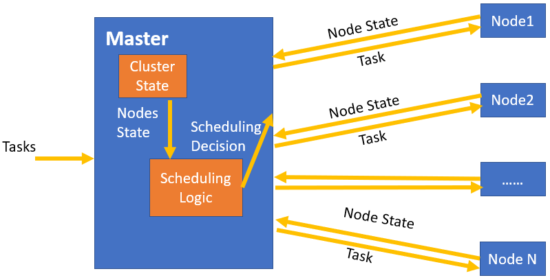
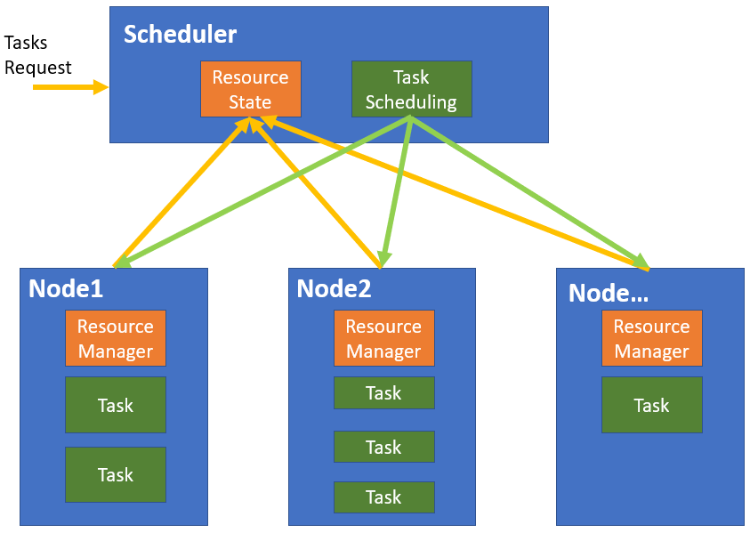
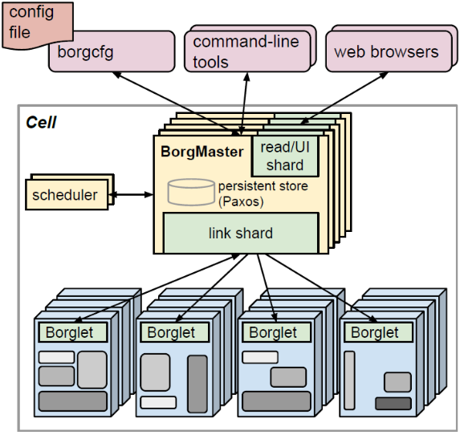
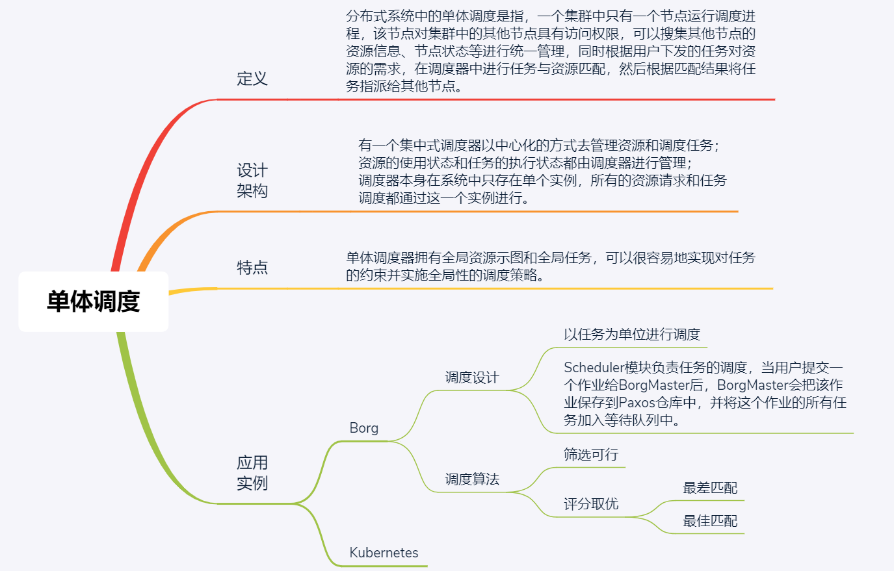

- 00 开篇词 四纵四横，带你透彻理解分布式技术.md.html
- 01 分布式缘何而起：从单兵，到游击队，到集团军.md.html
- 02 分布式系统的指标：啥是分布式的三围.md.html
- 03 分布式互斥：有你没我，有我没你.md.html
- 04 分布式选举：国不可一日无君.md.html
- 05 分布式共识：存异求同.md.html
- 06 分布式事务：All or nothing.md.html
- 07 分布式锁：关键重地，非请勿入.md.html
- 08 分布式技术是如何引爆人工智能的？.md.html
- 09 分布式体系结构之集中式结构：一人在上，万人在下.md.html
- 10 分布式体系结构之非集中式结构：众生平等.md.html
- 11 分布式调度架构之单体调度：物质文明、精神文明一手抓.md.html
- 12 分布式调度架构之两层调度：物质文明、精神文明两手抓.md.html
- 13 分布式调度架构之共享状态调度：物质文明、精神文明多手协商抓.md.html
- 14 答疑篇：分布式事务与分布式锁相关问题.md.html
- 15 分布式计算模式之MR：一门同流合污的艺术.md.html
- 16 分布式计算模式之Stream：一门背锅的艺术.md.html
- 17 分布式计算模式之Actor：一门甩锅的艺术.md.html
- 18 分布式计算模式之流水线：你方唱罢我登场.md.html
- 19 分布式通信之远程调用：我是你的千里眼.md.html
- 20 分布式通信之发布订阅：送货上门.md.html
- 21 分布式通信之消息队列：货物自取.md.html
- 22 答疑篇：分布式体系架构与分布式计算相关问题.md.html
- 23 CAP理论：这顶帽子我不想要.md.html
- 24 分布式数据存储系统之三要素：顾客、导购与货架.md.html
- 25 数据分布方式之哈希与一致性哈希：“掐指一算”与“掐指两算”的事.md.html
- 26 分布式数据复制技术：分身有术.md.html
- 27 分布式数据之缓存技术：“身手钥钱”随身带.md.html
- 28 分布式高可靠之负载均衡：不患寡，而患不均.md.html
- 29 分布式高可靠之流量控制：大禹治水，在疏不在堵.md.html
- 30 分布式高可用之故障隔离：当断不断，反受其乱.md.html
- 31 分布式高可用之故障恢复：知错能改，善莫大焉.md.html
- 32 答疑篇：如何判断并解决网络分区问题？.md.html
- 33 知识串联：以购买火车票的流程串联分布式核心技术.md.html
- 34 搭建一个分布式实验环境：纸上得来终觉浅，绝知此事要躬行.md.html
- 特别放送 Jackey：寄语天涯客，轻寒底用愁.md.html
- 特别放送 分布式下的一致性杂谈.md.html
- 特别放送 崔新：追根溯源，拨开云雾见青天.md.html
- 特别放送 徐志强：学习这件事儿，不到长城非好汉.md.html
- 特别放送 那些你不能错过的分布式系统论文.md.html
- 结束语 为什么说提升职业竞争力要从尊重、诚实开始？.md.html
- 捐赠
11 分布式调度架构之单体调度：物质文明、精神文明一手抓
你好，我是聂鹏程。今天，我来继续带你打卡分布式核心技术。
在前两篇文章中，我和你分析了云资源管理的集中式架构和非集中式架构。可以看出，分布式系统架构的目的是，将多个服务器资源管理起来，寻找合适的服务器去执行用户任务。
那，什么是合适的服务器呢？衡量一个服务器是否合适会涉及很多条件或约束，比如在一些场景下，任务存在优先级，那当我们需要执行多个任务的时候，通常需要满足优先级高的任务优先执行的条件。但在这些条件中，服务器资源能够满足用户任务对资源的诉求是必须的。
而为用户任务寻找合适的服务器这个过程，在分布式领域中叫作调度。在分布式系统架构中，调度器就是一个非常重要的组件。它通常会提供多种调度策略，负责完成具体的调度工作。
当然，不同的分布式架构的调度器原理也不一样，最常见或最直观的是单体调度，就是任务和分布式系统中的空闲资源直接进行匹配调度。也就是说，调度器同时管理任务和资源，如果把资源比作“物质文明”，把任务比作“精神文明”，那么单体调度就是“物质文明和精神文明一手抓”。
接下来，我带你一起打卡分布式调度架构之单体调度。
首先，让我们先了解一下什么是单体调度。
什么是单体调度？
分布式系统中的单体调度是指，一个集群中只有一个节点运行调度进程，该节点对集群中的其他节点具有访问权限，可以对其他节点的资源信息、节点状态等进行统一管理，同时根据用户下发的任务对资源的需求，在调度器中进行任务与资源匹配，然后根据匹配结果将任务指派给合适的节点。
单体调度器拥有全局资源视图和全局任务，可以很容易地实现对任务的约束并实施全局性的调度策略。目前很多集群管理系统采用了单体调度设计，比如我们第9讲中提到的Google Borg、Kubernetes等。
如下图所示，图中展示了一个典型的单体调度框架。Master节点上运行了调度进程（负责资源管理、Tasks和资源匹配）；Node 1，Node 2，…..， Node N对应着我们在第9篇文章中讲的Master/Slave架构中的Slave节点。
在单体调度框架中，多个Node节点会将本节点的State（例如，资源信息等）上报给Master节点。Master节点将Nodes State信息记录在Cluster State模块，Cluster State模块用于管理集群中节点的资源等状态。Master节点中的Scheduling Logic模块用于进行Tasks与节点资源的匹配。当Master需要下发任务时，Cluster State模块会将节点的资源状态传送给Scheduling Logic模块，以便Scheduling Logic模块进行Tasks与资源匹配，并根据匹配结果将Task发送给匹配到的节点。

单体调度设计
下图展示了单体调度的基本模型，具有全局系统视角的单体调度器是“Scheduler”模块，“Scheduler”模块包含多个子模块，包括记录全局资源信息的“Resource State”模块、负责任务调度的“Task Scheduling”模块等。“Scheduler”主要的工作就是基于每个节点的资源信息，根据制定的资源-任务匹配规则，从而将任务下发给对应的节点。
每个节点都有本地的资源管理模块“Resource Manager”，上报节点资源信息，并接收来自中央调度器下发的任务。

在Borg和Kubernetes这两个典型的集中式集群管理系统中，Scheduler是它们的核心。而Kubernetes又是Borg的开源版本。所以接下来，我就以Borg为例，与你讲述它的调度器该如何设计，才能保证在大规模集群上，运行来自不同应用的成千上万的作业。
Borg调度设计
调度的初衷是为作业或任务寻找合适的计算资源，也就是说作业或任务是调度的对象。那么“作业”和“任务”到底是什么呢？下面，我带你先了解一下作业和任务的概念以及关系。
我们先来看看作业和任务的定义分别是什么吧。
一个Borg 作业（job）的属性通常包括作业名称、作业产生者和作业包含的任务数量。作业可以有一些约束来限制作业中的任务（task）运行在指定的机器上，比如机器ID、任务所需数据所在机器等属性。这些约束可以是刚性的也可以是柔性的，其中柔性约束表示偏好，而非必须。需要注意的是，一个作业只能在一个集群中运行。
而一个任务对应的是一组Linux进程，运行在一台机器上的一个容器内或直接运行在节点上。任务也有一些属性，比如资源需求量、在作业中的序号等。
那么，作业和任务是什么关系呢？
概括来说，一个作业可以包含多个任务。作业类似于用户在一次事务处理或计算过程中要求计算机所做工作的总和，而任务就是一项项具体的工作。
一个作业中的任务大多有相同的属性，比如，CPU核、内存、硬盘空间、硬盘访问速度、TCP端口等。在任务运行时， 这些相同的属性，可以被覆盖 ，比如特定任务的命令行参数、各维度的资源等。
多个任务可以在多台机器上同时执行，从而加快作业的完成速度，提高系统的并行程度。而具体将哪个任务分配给哪个机器去完成，就是调度器要做的事儿了。
接下来，我就与你讲述下Borg的调度器——Scheduler组件，来帮助你理解Borg内部的任务调度流程，以加深你对单体调度的理解。其实，很多框架比如Hadoop、Spark等都是采用了单体调度设计，它们整体的思想类似，所以我希望通过对Borg调度的讲解，能够帮助你理解你所在业务中的调度逻辑。
我们先来回忆下Borg的系统架构图吧。
- Scheduler负责任务的调度，当用户提交一个作业给BorgMaster后，BorgMaster会把该作业保存到Paxos仓库中，并将这个作业的所有任务加入等待队列中。调度器扫描任务等待队列，根据预定义的调度算法，将队列中的任务分配到满足作业需求且有足够资源的计算节点上（也即上上图所示的Borglet节点）。
这里我要再强调一下，调度是以任务为单位的，而不是以作业为单位。调度器在扫描队列时，按照任务的优先级顺序，从高到低进行选择；且高优先级未被分配的任务可以抢占低优先级已被分配的任务。同优先级的任务则以轮询的方式处理。这样的任务分配次序，可以保证任务的公平，并避免队首的大型任务阻塞队列。
接下来，我们再看看调度器的核心部分，也就是调度算法吧。
Borg调度算法
Borg调度算法的核心思想是“筛选可行，评分取优”，具体包括两个阶段：
- 可行性检查，找到一组可以运行任务的机器（即上图中的Borglet）；
- 评分，从可行的机器中选择一个合适的机器（即上图中的Borglet）。
首先，我们看一下可行性检查阶段的具体规则。
在可行性检查阶段，调度器会找到一组满足任务需求，且有足够可用资源（包括空闲资源，和已经分配给低优先级任务但可以抢占的资源）的机器。
假设系统中有6个可以执行任务的机器，依次标记为节点1~6。现在有一个任务A，只能部署在节点1、节点3或节点5中，并且任务A的资源需求为0.5个CPU，200MB内存。根据任务A的约束条件，可以先从所有节点中筛选出节点1、节点3和节点5，然后根据任务A的资源需求，再从这3个节点中寻找满足任务资源需求的节点。
然后，我们看看评分阶段。
在评分阶段，调度器确定每台可行机器的适宜性。Borg的评分机制有很多种，但是不同的评分机制，都是针对可行性检查阶段中筛选出的机器，从这些可行的机器中根据评分机制进行打分，从而选出最适合调度的一台机器。
在评分过程中，我们可以根据不同的场景制定不同的评价指标，比如最小化被抢占的任务数、尽量选择已经执行了相同任务的机器、目标任务是否需要跨域部署、是否把不同优先级任务进行混合部署等。 根据不同的考虑因素，可以定制不同的评分算法。
其中，常见的评分算法，包括“最差匹配”和“最佳匹配”两种。
Borg早期使用修改过的E-PVM算法来评分，该算法的核心是将任务尽量分散到不同的机器上，以并行的方式提高任务执行的速度。该算法的问题在于，它会导致每个机器都有少量的无法使用的剩余资源，称为“碎片资源”，因此有时称其为“最差匹配”（worst fit）。
比如，现在有两个机器，机器A的空闲资源为1个CPU和1G内存、机器B的空闲资源为0.8个CPU和1.2G内存；同时有两个任务，Task1的资源需求为0.4个CPU和0.3G内存、Task2的资源需求为0.3CPU和0.5G内存。
按照最差匹配算法思想，Task1和Task2会分别分配到机器A和机器B上，导致机器A和机器B都存在一些资源碎片，如果此时来了一个Task3，其任务需求为0.8个CPU和0.8G内存，则Task3就可能无法立即分配到机器上，需要等到Task1或Task2执行完才能被分配执行。
与“最差匹配”相反的是“最佳匹配”（best fit），即把同一个机器上的任务塞得越满越好。这样就可以“空”出一些“空闲”的机器（它们仍运行存储服务），用于部署计算资源需求大的任务。
比如，在上面的例子中，按照最佳匹配算法的思想，Task1和Task2会被一起部署到机器A或机器B上，这样未被部署的机器就可以用于执行Task3这样的大型任务了。
但是，如果用户或Borg错误估计了资源需求，紧凑的“最佳匹配”操作会对性能造成巨大的影响。比如，用户估计它的任务A需要0.5个CPU和1G内存，运行该任务的服务器上由于部署了其他任务，现在还剩0.2个CPU和1.5G内存，但用户的任务A突发峰值时（比如电商抢购），需要1个CPU和3G内存，很明显，初始资源估计错误，此时服务器资源不满足峰值需求，导致任务A不能正常运行。
所以说，“最佳匹配”策略不利于有突发负载的应用，而且对申请少量计算资源的批处理作业也不友好。因为这些作业申请少量计算资源批处理作业，可以分配到多个机器上，从而使用机器上的碎片化资源，使得任务可以更快速地被调度执行。
但是，“最佳匹配”策略中，批处理作业往往会集中分配在一起，因此占用的并非是碎片化资源。此外，“最佳匹配”这种策略有点类似“把所有鸡蛋放到一个篮子里面”，当这台服务器故障后，运行在这台服务器上的任务都会故障，对业务会造成很大的影响。
“最差匹配”和“最佳匹配”，这两个评分算法各有利弊。在实践过程中，我们往往会根据实际情况来选择更合适的评分算法。比如，对于资源比较紧缺，且业务流量比较规律，基本不会出现突发情况的场景，可以选择最佳匹配算法；如果资源比较丰富，且业务流量会经常出现突发情况的场景，可以选择最差匹配算法。
Borg的任务部署机制是支持优先级高的任务抢占低优先级任务的，如果评分算法选中的机器上没有足够的资源来运行新任务，Borg会抢占该机器上已经部署的低优先级任务的资源，从最低优先级的任务开始，逐级向上抢占任务资源，直到可用资源足够运行新任务。其中，被抢占的任务放回到调度器的等待队列里。
当然有很多调度框架是支持用户根据自己的场景自定义调度策略的，比如优先级策略、亲和性策略、反亲和性策略等。
知识扩展：多个集群/数据中心如何实现单体调度呢？
今天这篇文章中，我与你讲述的单体调度，其实是针对一个集群或一个数据中心的，那么多个集群或多个数据中心，能不能基于单体调度实现呢？
答案是肯定的，这就是集群联邦的概念了。
所谓集群联邦，就是将多个集群联合起来工作，核心思想是增加一个控制中心，由它提供统一对外接口，多个集群的Master向这个控制中心进行注册，控制中心会管理所有注册集群的状态和资源信息，控制中心接收到任务后会根据任务和集群信息进行调度匹配，选择到合适的集群后，将任务发送给相应的集群去执行。
集群联邦的概念，其实就是单体调度的分层实现。如果你对集群联邦感兴趣的话，推荐你看一下Kubernetes的集群联邦设计和工作原理。
总结
今天，我以Borg为例，与你讲述了单体调度架构的设计及调度算法。
单体调度是指一个集群中只有一个节点运行调度进程，该调度进程负责集群资源管理和任务调度，也就是说单体调度器拥有全局资源视图和全局任务。
单体调度的特征，可以总结为以下四点：
- 单体调度器可以很容易实现对作业的约束并实施全局性的调度策略，因此适合作为批处理任务和吞吐量较大、运行时间较长的任务。
- 单体调度系统的状态同步比较容易且稳定，这是因为资源使用和任务执行的状态被统一管理，降低了状态同步和并发控制的难度。
- 调度算法只能全部内置在核心调度器当中，因此调度框架的灵活性和策略的可扩展性不高。
- 单体调度存在单点故障的可能性。
现在，我再用一个思维导图为你总结一下今天的主要内容，以方便你理解记忆。

单体调度器虽然具有单点瓶颈或单点故障问题，但因为其具有全局资源视图和全局任务，简单易维护，被很多公司广泛采用，比如Google、阿里、腾讯等公司。另外，我们今天介绍的Borg集群管理系统，以及其开源版Kubernetes集群管理系统，使用的都是单体调度结构。
单体调度结构虽然结构单一，但是其调度算法可以扩展甚至自定义，也就是说你可以根据业务特征，自定义调度策略，比如优先级策略、亲和性策略等。
学完了关于单体调度的知识后，赶紧上手试试，定制一个独特的调度算法或设计一个特定的单体调度器吧。如果你在这个过程中遇到了什么问题，就留言给我吧。
思考题
你能和我分享下，Google Borg是采用什么技术实现的资源隔离吗？
我是聂鹏程，感谢你的收听，欢迎你在评论区给我留言分享你的观点，也欢迎你把这篇文章分享给更多的朋友一起阅读。我们下期再会！
© 2019 - 2023 Liangliang Lee. Powered by gin and hexo-theme-book.